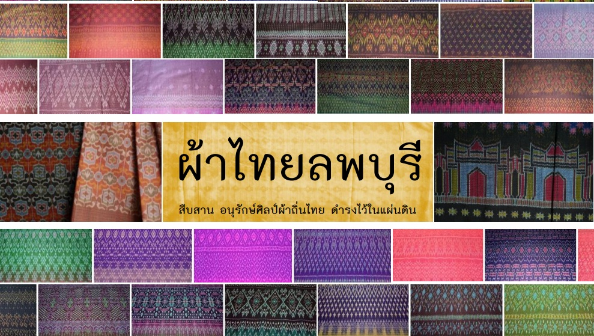

ลพบุรี เป็นเมืองที่มีแห่งความหลากหลาย และต่อเนื่องของความเจริญทางวัฒนธรรม ยาวนานกว่า 3,000 ปี ตั้งแต่สมัยก่อนประวัติศาสตร์ มีหลักฐานสำคัญแสดงถึงความเจริญสืบทอดกันมา การทอผ้ามัดหมี่เป็นภูมิปัญญาที่มีการถ่ายทอดสืบต่อกันมาจากรุ่นสู่รุ่นทำให้ผ้าทอมัดหมี่ยังมีให้เห็น ในปัจจุบัน โดยเฉพาะที่ตำบลหินปัก อำเภอบ้านหมี่ จังหวัดลพบุรี ผ้าทอมัดหมี่ เป็นผ้าทอสัญลักษณ์แห่งชาติพันธุ์เป็นภูมิปัญญาที่เป็นเอกลักษณ์ของ ชาวไทยพวนอำเภอบ้านหมี่ ที่ได้รับการสืบทอดมาจากบรรพบุรุษที่อพยพมาจากเขตเมืองพวน แขวงเชียงขวาง สาธารณรัฐประชาธิปไตยประชาชนลาว เมื่อประมาณสองร้อยกว่าปีที่ผ่านมา และได้อพยพโยกย้ายถิ่นฐานเข้ามาอยู่ในประเทศไทยหลายครั้ง ในช่วงต้นรัตนโกสินทร์ ชาวไทยพวน ที่อำเภอบ้านหมี่ จังหวัดลพบุรี มีชื่อเสียงด้านการทอผ้ามัดหมี่ โดยชาวพวนจะนิยมทอกันไว้ใช้ ในชีวิตประจำวันสำหรับตนเอง และสมาชิกภายในครัวเรือนแล้ว ยังมีการทอขึ้นเพื่อใช้ในพิธีกรรม ประเพณีต่าง ๆ ความเชื่อทางศาสนาและสังคมด้วย โดยชาวไทยพวน มีเครื่องแต่งกายที่เป็นเอกลักษณ์
คำว่า “ผ้ามัดหมี่” เป็นชื่อที่เรียกกรรมวิธีการทอผ้าอย่างหนึ่ง ที่นำเส้นด้ายที่เป็นเส้นพุ่ง หรือเส้นยืนที่เรียกว่า “หมี่” ไปมัดเป็นเปลาะๆ ด้วยเชือกกล้วยหรือเชือกฟางตามลวดลายที่คนทอ เป็นผู้กำหนดไว้ ก่อนนำไปย้อมสีต่างๆ เพื่อให้เกิดสีสัน เรียกวิธีการมัดย้อม ซึ่งความงดงาม และความเป็นเอกลักษณ์ของผ้ามัดหมี่ คือ รอยสีที่ค่อย ๆ ซึมในเนื้อผ้าที่ติดกับลวดลาย ทำให้ได้ ลวดลายที่แปลกตา เพิ่มความงดงามและความมีเสน่ห์ให้แก่ผ้ามัดหมี่ ในสมัยก่อนจะทอกันในช่วงเวลา ที่ว่างเว้นจากฤดูทำนา ผ้าที่นำมาทอจะเป็นผ้าซิ่นลายมัดหมี่ ผ้าขาวม้าและเครื่องนุ่งห่มเพื่อใช้ในครัวเรือน
